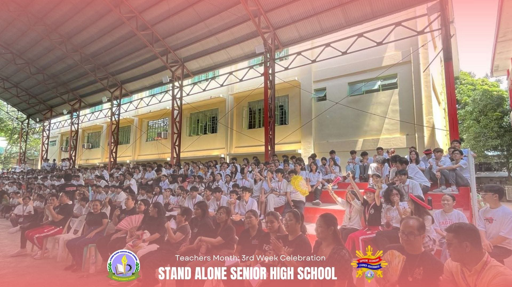
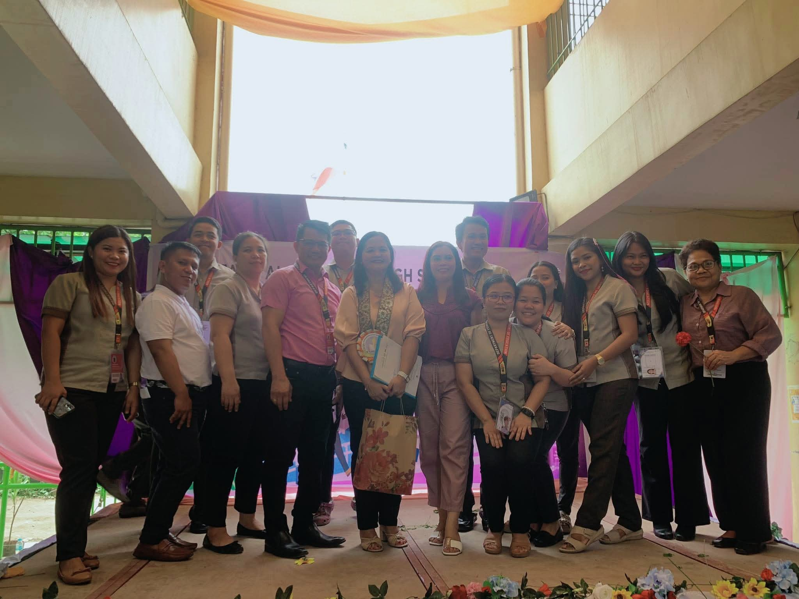

|
 |  |
|---|---|---|
| All out support for our champions! Go Taguig City and Pateros Delegates—show the nation your heart, grit, and pride! We believe in you! #PalarongPambansa2025 #TeamTaPat #TeamNCR #PusongKampyon" #fypシ゚viralシfypシ゚viralシalシ #highlightseveryone #everyonefollowers | Enjoying and celebrating. The teachers' month celebration grew increasingly thrilling and exhilarating. We are grateful to our SSLG Officers for planning this kind of teacher-focused event. It was a straightforward but entertaining experience for our pupils.
pictures credit to SSLG
|
We celebrate the National Women's Month and the International Women's Day with the theme “Lipunang Patas sa Bagong Pilipinas; Kakayahan ng Kababaihan, patutunayan!”
With our special guest
Ma'am Victoria Landicho our Education Program Supervisor in ESP and Values Education and GAD Division Focal Person
Ma'am Lorna Basagre
GAD Focal Person
#WomensMonth2024
pictures credit to SSLG |